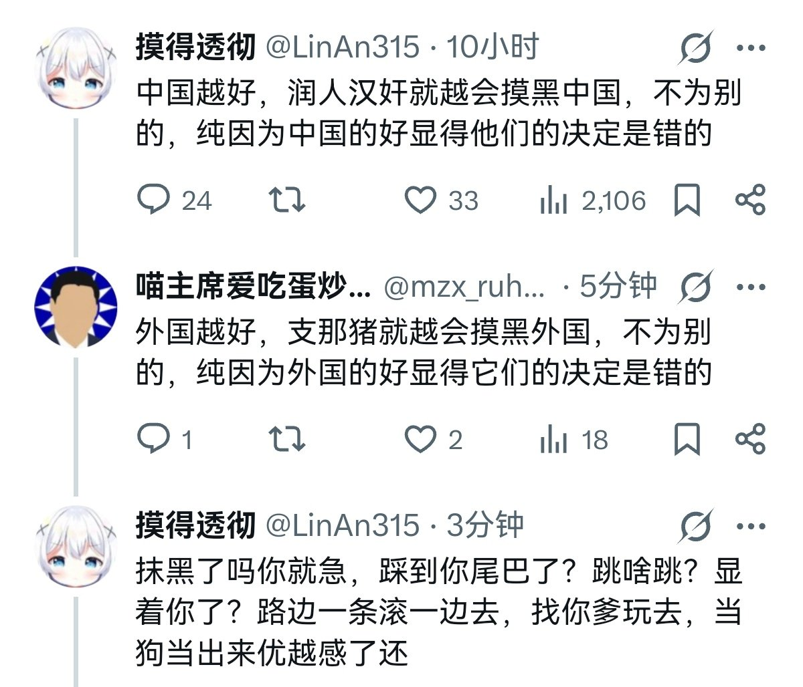

愿晚星照常升起🌈(keep4o)
@tadatsukiei
一直很困惑……
为什么许多人连最基本的不双标都做不到呢？输出自己的主观逻辑后被同样的话回击，这不是很正常吗？
这种时候不应该摆事实讲道理开始辩论吗？为什么要因自己的话术被别人化用了就破防呢？
只允许你骂别人，不允许别人骂你？
己所不欲勿施于人难道不是做人最基本的逻辑吗？
我认为这是一种精神不成熟的表现。

喵主席爱吃蛋炒饭
@mzx_ruhua
咦，你怎么急了😁 https://t.co/zUM6RaO8uD